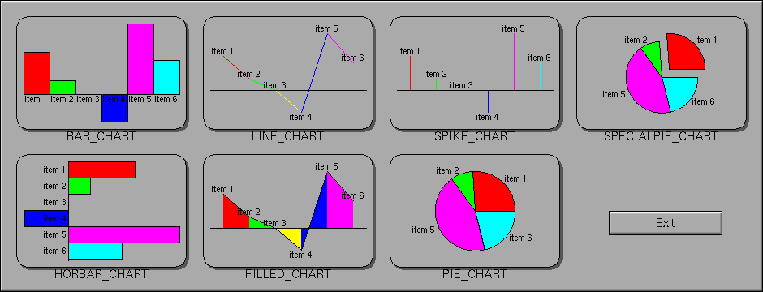

Class Hierarchy
Fl_Widget
|
+----Fl_Chart
Include Files
#include <FL/Fl_Chart.H>
Description
This widget displays simple charts and is provided for Forms compatibility.

Methods
Creates a new Fl_Chart widget using the given position, size,
and label string. The default boxtype is FL_NO_BOX.
Destroys the Fl_Chart widget and all of its data.
The add method adds the value and optionally
label and color to the chart.
The autosize method controls whether or not the chart will
automatically adjust the bounds of the chart. The first form returns a
boolean value that is non-zero if auto-sizing is enabled and zero is
auto-sizing is disabled.
The second form of autosize sets the auto-sizing property
to onoff.
The bounds method gets or sets the lower and upper bounds of
the chart values to a and b respectively.
The clear method removes all values from the chart.
The insert method inserts a data value at the given position
pos. Position 1 is the first data value.
The maxsize method gets or sets the maximum number of data
values for a chart. If you do not call this method then the chart will
be allowed to grow to any size depending on available memory.
The replace method replaces data value pos with
value, label, and color. Position 1 is the
first data value.
The size method returns the number of data values in the
chart.
The first form of type() returns the current chart type. The
chart type can be one of the following:
- FL_BAR_CHART
- Each sample value is drawn as a vertical bar.
- FL_FILLED_CHART
- The chart is filled from the bottom of the graph to the sample
values.
- FL_HORBAR_CHART
- Each sample value is drawn as a horizontal bar.
- FL_LINE_CHART
- The chart is drawn as a polyline with vertices at each sample
value.
- FL_PIE_CHART
- A pie chart is drawn with each sample value being drawn as a
proportionate slice in the circle.
- FL_SPECIALPIE_CHART
- Like FL_PIE_CHART, but the first slice is separated from the pie.
- FL_SPIKE_CHART
- Each sample value is drawn as a vertical line.
The second form of type() sets the chart type to t.